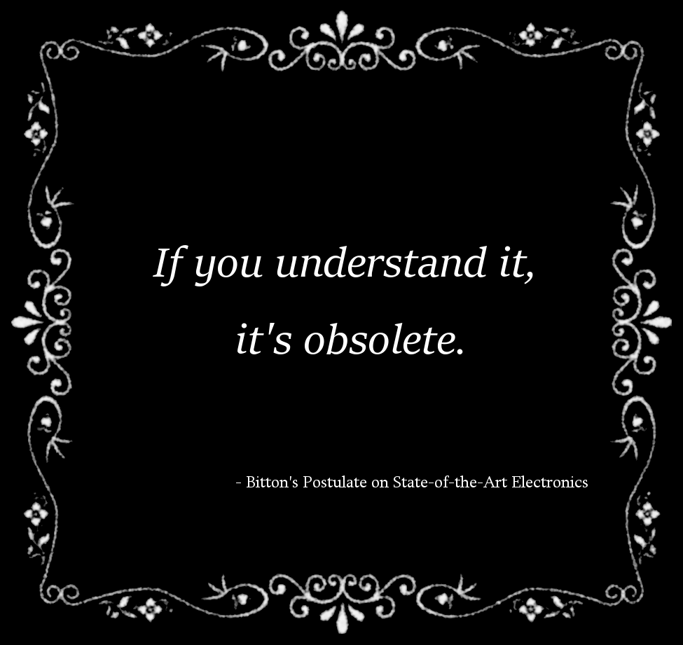

Como te decía, vamos a tratar la modulación FSK, para mi gusto la mayoría de páginas son demasiado superficiales o demasiado matemáticas, o se quedan en la descripción o se pierden en detalles sin llegar a hilar el proceso completo.
| Adaptador telefónico. Fotograma de Wargames (1983). Fuente. |
{kind=link}
Modulación analógica
Todo empieza cuando decidimos modificar una propiedad analógica para comunicar estados discretos.
Un sistema digital suele tener dos estados. Pero vamos a remontarnos al principio de las "comunicaciones digitales". A un sistema con tres estados discretos: un telégrafo.
Los caracteres en código morse están formados por los símbolos punto, raya y ausencia (o espacio). Cada carácter del alfabeto tiene una representación en base a estos tres símbolos.
Habitualmente el morse se codifica utilizando un sonido intermitente. De tal forma que un punto sería un pitido breve, una raya un pitido más largo (equivalente al triple que el punto) y un espacio sería la ausencia de sonido. El mismo sistema podría usarse con luz: un brillo largo, raya; un brillo corto punto; y la oscuridad espacio.
En ambos casos se trata de una modulación que se llama OOK (On/Off keying). La forma de modulación es la misma, la codificación es la misma.
Supongamos ahora que en lugar de un pitido intermitente tenemos dos tonos diferentes: el tono más agudo es la raya, y el tono más grave es el punto. O si queréis, una luz roja para el punto y verde para la raya. El silencio sigue siendo el espacio. Ahora hemos cambiado a otro tipo de modulación llamada FSK (Frequency Shift Keying). Quiere decir que utilizamos cambios de frecuencia para codificar los símbolos.
Suponed ahora que sólo tenemos un pitido. Pero suena bajito para el punto y más fuerte para la raya. Este tipo de modulación se llamaría ASK (Amplitude Shift Keying). Tal como indica, los diferentes estados se codifican mediante cambios en la amplitud o la intensidad de la onda. Realmente el caso OOK de antes es un tipo de ASK extremo, en el que las posibles intensidades son siempre 100% o 0%.
Es más fácil distinguir entre dos frecuencias que entre dos intensidades de un sonido. Por eso cuando hay algo de ruido y la señal se desvanece, sube y baja, la modulación en frecuencia funciona mejor que la de amplitud. Un ruido o una señal espuria puede cambiar la amplitud de una señal, pero no su frecuencia. Por eso FSK se utiliza más que ASK.
Para modular en FSK se necesitan dos osciladores o bien un oscilador de frecuencia variable. Técnicamente es más complejo pero más fiable. A cambio, en el receptor, discriminar una frecuencia de otra no será tan sencillo como determinar si hay señal o no en el caso de ASK.
Señal misteriosa
Imaginad por un momento que estamos explorando el espectro radioeléctrico. Buscamos una señal para ilustrar un artículo sobre modulaciones digitales, por ejemplo. Nos vamos a UHF, alrededor 447.700MHz nos llama la atención un grupo de señales bastante fuertes.
| Grupo de señales misteriosas. EyC. |
{kind=link}
Están emitiendo en FM estrecha (NFM), por diferenciarlo de FM ancha que serían las emisiones comerciales entre 88 y 108MHz. Emiten, como decía, un pitido monótono interrumpido de forma periódica por una trama modulada. Parece lo suficientemente simple como para servir de ejemplo. Y a la vez lo suficientemente raro como para despertar el interés que quien lo lea. ¿Qué puede ser ese grupo de señales?
Grabamos un periodo de tiempo para después hacer un análisis de espectro. Así averiguaremos la frecuencia del pitido, y de paso miraremos también la forma de la trama modulada.
| Frecuencias de la "señal misteriosa". EyC. |
{kind=link}
El pitido es de 2280Hz, mientras la trama se compone de dos frecuencias: 1300Hz y 1700Hz. Es decir, la portadora de 447.700MHz, se modula en FM, y transmite un sonido modulado mediante FSK. Cuando se usa una señal de audio modulada en FSK para modular a su vez una portadora de radio se denomina AFSK (audio FSK).
Parece sobrar ahí un paso intermedio ¿Por qué no modular en FSK la portadora directamente y pasar de la parte de audio? Simple, los transmisores y receptores de UHF capaces de transmitir o recibir sonidos en FM son fáciles de encontrar. Los transmisores preparados para variar su frecuencia de transmisión de acuerdo a una entrada digital, en cambio, son más escasos. Además aquí concretamente hay otra buena razón: a veces el canal también se usa para transmitir voz.
Si la trama se compone de dos frecuencias, tiene dos estados. Genéricamente los estados se llaman mark y space. Marca y espacio son dos nombres genéricos para no decir 1 o 0, porque no siempre hay una correspondencia directa.
Intentemos demodularla. Habréis notado que la amplitud de la frecuencia de 1300Hz es superior a la de 1700Hz. Es debido al filtrado. Sin embargo para este ejemplo nos va a venir muy bien. En lugar de demodular FSK vamos a suponer que la frecuencia es siempre la misma y lo que varia es sólo la amplitud. O sea, empezaremos haciendo como si la señal estuviese modulada en amplitud en vez de en frecuencia.
Esta es nuestra señal analógica de partida. Con dos amplitudes representando dos estados diferentes:
| Señal analógica original. Audio. EyC. |
{kind=link}
El proceso para demodular en amplitud es rectificar la señal y aplicar un filtro paso bajo para obtener la envolvente.
| Señal demodulada en AM (en naranja). EyC. |
{kind=link}
Por lo general, en FSK la frecuencia más alta representa el espacio y la más baja la marca. Aquí, como la frecuencia más alta es la más atenuada, coincide con que los ceros (espacios) son de menor amplitud que los unos (marcas).
Estamos suponiendo que la marca corresponde al 1 y el espacio al 0. Esta suposición se llama codificación unipolar sin retorno a 0 de tipo nivel (Unipolar non-return-to-zero level).
| Asignación de valores digitales en función de la amplitud. EyC. |
{kind=link}
La duración del 1 viene a ser 70 o 75 muestras. Dado que el muestro es a 44100Hz, redondeando viene a ser 600 unos o ceros por segundo. Se ajusta bastante bien al superponer una onda cuadrada. Ya tenemos un dato más: la velocidad de transmisión son 600 baudios. Ahora ponemos un comparador para fijar un umbral y ya tenemos nuestra señal demodulada:
| Representación de la onda digital extraída. EyC. |
{kind=link}
Como hemos supuesto que la codificación es por nivel, asignamos 0 al nivel bajo y 1 al nivel alto y tenemos nuestra señal decodificada:
11111111111100100000010000000000001010100000100000001010
Muy bien... ¿qué dice el mensaje? Ni idea. Para eso debemos conocer el protocolo. Sin más información no podemos interpretarlo.
Tenemos dos opciones para continuar: o buscamos en Internet con la información que ya conocemos (frecuencias de UHF, tonos de audio, velocidad de transmisión); o sencillamente lo buscamos en el Cuadro Nacional de Atribución de Frecuencias (CNAF), cuya nota UN-78 dice:
UN - 78 Transporte ferroviario
Los canales cuyas frecuencias se indican a continuación se destinan en el territorio peninsular exclusivamente para servicios afectos al control de tráfico ferroviario en el sistema de comunicaciones tren – tierra.
...
447,650
447,700
447,750
...
El tren-tierra es un sistema de radioteléfono adoptado por Renfe en los 80. Sirve para comunicarse entre el puesto de mando y los maquinistas en circulación. Ha caído en desuso en favor de tecnologías más modernas, como GSM-R o el teléfono móvil. Si os interesa, hay artículos muy buenos sobre él, como Tren-Tierra, la radiotelefonía ferroviaria española o ¿Cómo funcionan los trenes? - Comunicaciones ferroviarias de donde es esta foto:
| Consola PMR de tren-tierra (centro). Fuente. |
{kind=link}
Para tener ya cerca de 40 años es bastante sofisticado. Permite conversar en full-duplex con un tren en concreto sin que el resto escuchen la conversación, enviar determinadas órdenes o estados predefinidos, indica cuando se ha perdido la cobertura e incluso tiene la capacidad de enviar mensajes de texto.
Buscando en Internet no he podido encontrar la descripción técnica del tren-tierra. Tal vez por motivos de seguridad no resulte conveniente que la especificación completa sea de conocimiento público. No obstante, en el Diario Oficial de la Unión Europea consta la información referente a la norma UIC a la que deben ajustarse estas comunicaciones, y con esto es suficiente para interpretar el mensaje:
Radiocomunicación UIC, capítulos 1-4+6
Se trata de un sistema analógico que consta de equipos de tierra y móviles (instalados a bordo del tren).
Frecuencias:
- tierra-tren:
- banda B: 447,400 MHz a 448,450 MHz
Tonos de operación:
- canal libre: 2 280 Hz,
Estructura del telegrama:
- encabezamiento sincr.: 1111 1111 0010,
- número de tren 6 caracteres decimales codificación BCD,
- 2 posiciones de información, 4 bits cada una,
- código de redundancia de 7 bits, polinómico: 1110 000 1 (H=4).
Transmisión del telegrama:
- 600 bits/s,
- FSK, «0» = 1 700 Hz, «1» = 1 300 Hz.
Mensajes (codificación en representación hexadecimal):
- voz 08
...
¡Bingo! Coinciden frecuencias, velocidad de transmisión y hasta el tono de 2280Hz que indica canal libre. Ahora podemos interpretar el telegrama según la estructura descrita. Agrupamos los bits de 4 en 4 para hacerlo más legible.
| Procedimiento para decodificar un telegrama tren-tierra. EyC. |
{kind=link}
De acuerdo con lo anterior esta trama, emitida por el equipo fijo del Tren-Tierra, indicaría al maquinista del tren 20045 que el puesto de mando desea iniciar una comunicación telefónica.
El protocolo UIC 751-3, muy simple, contiene todo necesario:
- Nos indica cómo empiezan los paquetes de datos. El receptor digital necesita una marca clara señalizando exactamente el principio de la trama. Si falta o sobra un solo bit el resultado sería indescifrable. En nuestro caso el paquete siempre empieza tras la secuencia 1111 1111 0010.
- Indica cómo termina un paquete. En este caso no es necesario porque la estructura es de longitud fija. En este tipo de mensajes el paquete termina tras recibir 39 bits después de la cabecera. El último bit, el que haría 40, no tiene utilidad, aunque es una práctica habitual incluir un bit de paridad impar en los mensajes codificados en NRZL -por si acaso-.
- Indica quién es el receptor del mensaje. En una red donde hay varios receptores a los que les llega la señal, se requiere que los paquetes sean interpretados por un destinatario en particular. Eso no significa que el resto no lo reciban, únicamente no lo interpretan.
- Sin embargo, no se indica el emisor. Generalmente sí, pero en este caso el Puesto de Mando y el tren emiten por canales separados, no se especifica quién ha emitido un mensaje porque se sobreentiende.
- Siempre hay un modo de comprobar si el mensaje ha llegado íntegro, sin errores debido a interferencias, por ejemplo. A menudo se hace con un CRC, en este caso de 7 bits.
Es hora de pasar al siguiente nivel.
El TCM3105
Tuve mi primer encuentro con FSK hace cosa de 20 años. Construí un módem Baycom de 1200 baudios para packet-radio que, como cabía esperar, no funcionó.
Salvo para profesionales, en los 90 la electrónica era cosa de suerte o de magia. De suerte si contabas con algún conocido que tuviera experiencia y acceso a manuales técnicos de fabricantes o si habías comprado la revista con las explicaciones pertinentes. En otro caso, si apenas tenías el esquema y nada más, era cuestión de magia. Y la magia podía salir bien o mal; si salía mal poco podías hacer aparte de revisar una y otra vez el hechizo.
Cuando Internet hizo popular esto cambió. Ahora puedes comprar por una miseria componentes que hace años eran imposibles de encontrar, o carísimos, en una tienda de barrio. Y aún más importante, acceder a las especificaciones técnicas y a los manuales de integrados que serían una caja negra sin ellos.
Para construir el módem del que os hablaba fue preciso conseguir un chip TCM3105. Muy difícil de encontrar porque había dejado de fabricarse, según me dijeron. Tras unos meses de espera llegó a la tienda y me costó unos 20 euros (3000 pesetas). Como al final mi módem no funcionó, compramos uno ya montado y ahí quedó la cosa.
| Integrado TCM3105 pedido por Ebay. EyC. |
{kind=link}
Hace poco me dio por buscar en Ebay a ver qué precio tendría, si aún quedaban existencias, el TCM3105. ¡Y cuestan menos de 1 dólar! Sin duda algún fabricante chino ha reanudado su fabricación. Miré el datasheet, compré un par de integrados, tenía los demás componentes por aquí y decidí hacerlos funcionar.
Hay un problema, las BBS de packet radio desaparecieron a principio de los 2000. Lo único activo hoy en día en AFSK-1200 que fuera fácil de captar son transmisiones APRS (Automatic Packet Reporting System) una especie de seguimiento GPS de radioaficionados en UHF. Sintonizo el receptor SDR en 144.800MHz, la frecuencia oficial de APRS en Europa. Hay poco tráfico pero servirá.
Y había un segundo problema: Estos módems utilizaban el puerto serie RS232 de forma no estándar. El software es antiguo y probablemente no funcione en un PC moderno donde ni siquiera tenemos puerto serie nativo. Podría usar uno de los puertos GPIO de la Raspberry para recibir ahí la señal, pero eso implica escribir también el software.
¿Merece la pena teniendo en cuenta que cualquier software tipo soundmodem hace lo mismo y mejor usando únicamente la tarjeta de sonido? En mi opinión, sí. Vale la pena sólo por ver cómo van encajando las piezas del rompecabezas.
Esta es la caracterización completa de la señal digital (ejemplos en Signal ID Wiki):
Portadora en 144.800MHz, modulada en NFM (12kHz) mediante AFSK siguiendo el esquema Bell 202; el protocolo de transmisión de datos es AX.25, implica tramas tipo HDLC codificadas en modo NRZI con orden LSB.
¿Qué significa semejante galimatías? Significa que acabamos de empezar.
FSK de verdad
El TCM3105 implementa por hardware un Modulador-Demodulador de FSK. Si vais al datasheet, por ejemplo aquí: TCM3105, en la página 8 veréis entre los varios modos que soporta:
- CCITT V.23. Cuyas frecuencias son 1700Hz y 1300Hz y 600 baudios de velocidad de transmisión. ¿Os suena? Es el mismo que vimos arriba cuando decodificamos las señales del tren-tierra.
- Y el modo Bell 202. A 1200 baudios y cuyas frecuencias son 2200Hz y 1200Hz para el espacio y la marca respectivamente. Este es el modo usado en APRS y packet-radio.
Antes hicimos un poco de trampa. Si recordáis, habíamos pasado la señal FSK por un filtro y luego la habíamos demodulado como si estuviera modulada en amplitud. Funciona bien, sobre todo para bajas velocidades de transmisión.
Nuestro integrado utiliza una aproximación diferente. Aunque hoy en día no se usan ni una ni otra, se emplea un algoritmo llamado de Goertzel para calcular rápidamente componentes concretos de la transformada de Fourier en la señal de entrada. Lo cual es muy práctico para detectar las dos únicas frecuencias que nos interesan pero requiere mayor potencia de cálculo.
Reproduzcamos aproximadamente el funcionamiento del TCM3105, obviando las primeras etapas de filtro y control de ganancia. El archivo con las operaciones lo tenéis aquí: tcm3105.m.
Supongamos que esta es la señal original:
| Señal original AFSK-1200. EyC. |
{kind=link}
Según la descripción del datasheet, la señal analógica de entrada pasa por un comparador y se convierte en una onda rectangular. Así eliminamos las variaciones de amplitud y nos centramos sólo en las de frecuencia.
| Señal original (en naranja) transformada en onda rectangular (azul). EyC. |
{kind=link}
A continuación viene el paso principal, muy ocurrente por otra parte. Tomamos esta señal rectangular y la utilizamos para activar un flip-flop de duración fija. Este flip-flop se activa tanto en el flanco de subida como en el de bajada. Esto significa que oscilará al doble de la frecuencia original. Como el estado activado tiene siempre la misma duración, en las frecuencias bajas pasará más tiempo inactivo que durante las frecuencias altas. Más adelante, eso nos permitirá distinguirlas.
| Efecto del flip-flop. EyC. |
{kind=link}
Ahora aplicamos a la salida del flip-flop un filtro paso bajo. La salida de este filtro es proporcional a la componente continua de la señal, y esta a su vez, lo era a la frecuencia de entrada.
Este sería el resultado, he dibujado dos líneas adicionales para indicar dónde estaría el nivel alto y el nivel bajo. Yo he usado un filtro paso bajo de primer orden (equivalente a un condensador y una resistencia); no porque sea el más apropiado, sino porque es el más fácil de hacer por software.
| Señal a la salida del filtro paso-bajo. EyC. |
{kind=link}
Ya sólo nos queda pasar la señal por un comparador para determinar el nivel alto y bajo de salida. La tensión umbral se aplica en la patilla RXB del integrado, muy importante como veremos luego. Si el resultado de las etapas anteriores está por encima de este valor, la salida estará a nivel alto y si no, estará a nivel bajo. En el datasheet este paso se denomina slicer.
| Señal a la salida del comparador "slicer". EyC. |
{kind=link}
Así es como el integrado transforma el ruido en una sucesión de marca - espacio. No digo de unos y ceros porque sería incorrecto.
Para continuar con el ejemplo de decodificación manual el siguiente paso es deshacer el código de línea NRZI(S). A diferencia del NRZL de antes donde la marca era 1 y el espacio 0, en NRZI(S) lo que importa son los cambios. ¿Hay cambio de 1 a 0 o de 0 a 1? Pues es un 0. ¿No hay cambio? Pues es un 1. Así nos da igual si antes la señal estaba en estado alto o bajo, lo que importa es si hay cambio o no. A veces se le llama NRZS, otras NRZI(S).
Hay varias formas de decodificar esta señal, yo me voy a quedar con la más cómoda. Partimos de la premisa de que un cambio significa un 0, siempre y por eso los cambios son muy fáciles de detectar. Lo importante es saber cuántos unos venían antes de ese 0. Más adelante lo volveremos a ver.
Como la velocidad de transmisión es 1200 baudios, significa un símbolo cada 833us. Es decir, simplemente tenemos que calcular el tiempo desde el último cambio y dividirlo por 833us. Idealmente los valores serían discretos, pero debido a imperfecciones del sistema siempre hay un error hacia arriba o hacia abajo. Aproximaremos al entero más cercano.
Gráficamente sería así:
| Duración en símbolos entre cada cambio de estado. EyC. |
{kind=link}
El resultado será el número de unos que vienen antes del 0, o mejor dicho, el lugar que hace el 0. Por ejemplo si el resultado es 7 significa que el 0 es el séptimo lugar, luego habrá seis unos y luego el 0: 1111110. Si el resultado es 1, significa que no había ningún 1 antes, y directamente viene el 0. El mínimo resultado posible es un símbolo. Si la distancia es menor de un símbolo se trata de alguna interferencia.
Este es el resultado, una bonita ristra binaria:
0111111001111110011111100001010101100101000101010010010100100110000000100000011
1000101010110010100010101001001010100011000000010100001101111101001000110110000
00101111110
El protocolo AX.25
AX.25 es un protocolo muy antiguo (anterior incluso al modelo OSI) que surge de la adaptación del X.25 al uso por radioaficionados. AX.25 hace dos modificaciones sobre la base de X.25: una es modificar las cabeceras para alojar múltiples indicativos de las estaciones de radioaficionado, y la otra incorporar un tipo de paquete llamado de información sin numerar (UI). Como si fuera una trama UDP, sin conexión.
La norma X.25, a su vez, incorpora elementos de HDLC. Así fue como se estandarizó en 1979 el SDLC, un protocolo inventado por IBM para comunicar sus Mainframes.
En la actualidad es casi imposible encontrar activa una red X.25. Por eso, para mí, interpretar una trama APRS, basada en AX.25 es como viajar al pasado y tener la rara oportunidad de entender una conversación en una lengua muerta. No me malinterpretéis, por favor, no echo de menos las redes punto a punto; pero en ocasiones merece la pena levantar la vista de IP.
Los paquetes HDLC, incluyendo AX.25 empiezan y terminan con la marca 01111110. Suele transmitirse varias veces para dar tiempo al receptor a prepararse.
Como ya vimos, con el sistema NRZI(S) tenemos claro cuando hay un 0, porque es un cambio. Pero el 1 es una señal continua. Y mientras más unos seguidos haya más difícil será distinguir cuántos son. A ti te pasa igual cuando ves el mismo símbolo escrito varias veces seguidas y quieres contar cuantos van. Para mitigarlo el protocolo HDLC impone que jamás, nunca podrá haber más de 5 unos seguidos en el paquete. En caso de encontrar 6 unos seguidos en la trama binaria, entonces el transmisor insertará tras el quinto un 0, tan sólo con el objetivo de forzar un cambio. El receptor sabe que no debe hacer caso a ese cero que viene tras cinco unos seguidos. Esta norma se llama bit-stuffing y sólo tiene una excepción: las marcas de cabeza y cola.
En la trama anterior tenemos un ejemplo (subrayado):
0111111001111110011111100001010101100101000101010010010100100110000000100000011
100010101011001010001010100100101010001100000001010000110111110100100011011000
000101111110
Tras eliminar ese 0 agrupamos en octetos (grupos de 8 bits):
01111110
00010101
01100101
00010101
00100101
00100110
00000010
00000111
00010101
01100101
00010101
00100101
01000110
00000010
10000110
11111100
10001101
10000001
01111110
Tiene buena pinta. Si nos sobraran o faltaran bits al hacer los grupos de 8 ya sabríamos que algo iba mal.
Tras deshacer el bit-stuffing reordenaremos los bits. HDLC especifica que la transmisión se hace en orden LSB. Es decir, el bit menos significativo de cada grupo se envía el primero. Por tanto le daremos la vuelta para dejar al principio el bit más significativo:
01111110
10101000
10100110
10101000
10100100
01100100
01000000
11100000
10101000
10100110
10101000
10100100
01100010
01000000
01100001
00111111
10110001
10000001
01111110
Ya estamos listos para interpretar el paquete. La especificación del protocolo la tenéis por ejemplo en TAPR.
Flag
01111110
Destination
1010100 0 -> T
1010011 0 -> S
1010100 0 -> T
1010010 0 -> R
0110010 0 -> 2
0100000 0 -> ' '
1 11 0000 0 -> SSID 0
Source
1010100 0 -> T
1010011 0 -> S
1010100 0 -> T
1010010 0 -> R
0110001 0 -> 1
0100000 0 -> ' '
0 11 0000 1 -> SSID 0 (extension bit true: last callsign)
Control
001 1 1111 -> SABM, Poll = 1
FCS
10110001 10000001
Flag
01111110
Intentemos desgranar las partes que más nos interesan.
Lo primero es el identificativo de las estaciones origen y destino. Cada identificativo tiene 7 bytes, es cual está formado por 6 caracteres de 7 bits cada uno, y un último byte que indica entre otros datos el SSID -Secondary Station ID- (como si fuera el puerto destino si me permitís el símil). El último bit del último byte se llama bit de extensión. Vale 1 si este es el último indicativo de la lista y 0 si siguen más.
Como mínimo habrá dos indicativos, el primero siempre es el de la estación destino y el segundo el origen. El resto serán los repetidores (routers) por los que pasa la transmisión. Este ejemplo viene directamente de la estación TSTR1-0 a TSTR2-0.
A continuación el bit de control nos indica qué tipo de paquete es. Aquí se trata de un paquete tipo SABM. Se utiliza para indicar a la estación destino la intención de establecer una conexión en la que ambas partes puedan enviar y recibir información como iguales indistintamente (para la época esto era algo muy avanzado y se le llama Modo Balanceado). Sería como un TCP SYN. Si la la otra estación puede atender la llamada, contestará con un UA (ACK) para confirmar la conexión.
Este paquete no tiene ni número de secuencia, ni datos. Por tanto sigue el Frame Sequence Check. Es un nombre rimbombante para referirse al CRC o checksum, útil para calcular si el paquete se ha recibido sin errores. Siempre son los dos últimos bytes de la trama, sin contar la señal de terminación (01111110).
Veamos ahora otro ejemplo:
0111111000010101011110010001000101111001011001010000001000000111010100010100110
1011000010100100101010001001110011000011011000000000011110001001011110110001101
10100001101000010010110000100111000100111001111110
Siguiendo el mismo proceso que para el paquete anterior (deshacer bit stuffing, agrupar en octetos, invertir orden de los bits) obtenemos:
01111110 -> Flag (start)
Destination:
1010100 0 -> T
1001111 0 -> O
1000100 0 -> D
1001111 0 -> O
1010011 0 -> S
0100000 0 -> <space>
111 0000 0 -> SSID secondary station id 0
Source
1000101 0 -> E
1011001 0 -> Y
1000011 0 -> C
1001001 0 -> I
1000101 0 -> E
1001110 0 -> N
011 0000 1 -> SSID 0 (last: true)
00000011 -> Type: UI
11110000 -> PID: no proto
Info
01001000 -> H
01101111 -> o
01101100 -> l
01100001 -> a
00100001 -> !
00001101 -> <cr>
FCS
00111001 01110010
01111110 -> Flag (end)
Aquí también tenemos sólo dos indicativos, como en el ejemplo anterior.
El byte de control indica que es de tipo UI. Los paquetes UI (Unnumbered Information -a veces llamados también Unproto-) son una extensión de AX.25 frente al X.25 original. Se parecen a los datagramas UDP en el sentido de que contienen información pero se pueden enviar sin tener una conexión previamente establecida. Aunque a diferencia de UDP, en AX25 se puede indicar una ruta de repetidores para enrutar el mensaje.
A continuación del octeto de control viene el llamado identificador de protocolo. En nuestro caso 11110000 indica que no hay ningún protocolo de capa 3.
Lo siguiente es el mensaje propiamente dicho. No se indica tamaño, se considera que el payload es ya todo salvo los dos últimos bytes del FCS. En este caso es "Hola!".
Para recapitular, la decodificación de un paquete AFSK, AX.25 consiste en:
- Sintonizar el receptor en 144.800Mhz, en FM estrecha (12kHz).
- Enviar la salida de audio al integrado TCM3105 que hará de módem.
- Conectar la salida del integrado a un puerto GPIO de la Raspberry.
- Decodificar la señal NRZI procedente del modem a una trama binaria.
- Buscar continuamente la secuencia 01111110 para reconocer el principio de un paquete y el final.
- Deshacer el bit stuffing.
- Ordenar por grupos de 8 bits (octetos).
- Invertir el orden de los bits.
- Comprobar el CRC para verificar la integridad del paquete.
- Leer los indicativos en la cabecera hasta encontrar alguno con el ultimo bit a 1, esto indica que es el último.
- Leer el byte de control para saber de qué tipo de trama se trata. Solamente abordaremos las tramas SABM y UI.
- Finalmente, si se trata de una trama UI, mostrar el mensaje.
Hay muchos artículos sobre el tema, tenéis por ejemplo este: KISS, HDLC, AX.25 and friends
Tenemos la teoría pero, como decía Morfeo: existe diferencia entre conocer el camino... y andar el camino.
Encajando las piezas
Para no extender demasiado el artículo he preparado un repositorio GitHub con las fuentes y los ficheros de ejemplo: repositorio afsk-ax25.
Teniendo en mente los pasos anteriores, yo voy a empezar por el final: dada una ristra de unos y ceros voy a escribir un software para decodificarla como un paquete AX.25. Este sería el fichero decode_ax25. Lee continuamente por la entrada estándar una secuencia de caracteres 1 y 0 (para lo cual primeramente pone el terminal en modo raw). A medida que llegan, va buscando la cadena 01111110 para situar el principio o el final de un paquete.
Cuando tiene lo que parece ser un paquete completo, calcula el CRC y lo compara con los dos últimos bytes (el FCS). Si coincide, parece tratarse de un paquete válido. Decodifica las estaciones de la ruta y las escribe por pantalla. A continuación comprueba que sea de tipo SABM o UI; sólo está programado para decodificar estos dos tipos. Y si es de tipo UI, además, imprime por pantalla el mensaje recibido.
Este sería el resultado de probar con el paquete UI del ejemplo anterior:
$ ./decode_ax25 < test_data/UI.dat
Decoding 24 bytes
10101000 a8
10011110 9e
...
00001101 0d
00111001 39
01110010 72
CRC: 7239 FCS: 7239
VALID FRAME!!! ---------------
(21:33:01) TODOS-0* <- EYCIEN-0: UI
Hola!
¡Correcto! Todos los pasos anteriores como la reordenación, el agrupado, el bit stuffing, etc. se hacen bien. El paquete se decodifica y se muestra. Más tarde desactivaremos la depuración para que únicamente nos muestre los paquetes con CRC válido y no el ruido.
Lo siguiente es hacer un pequeño software intermedio que lea los estados de un pin GPIO y escriba por la salida estándar los unos y ceros correspondientes, teniendo en cuenta el código de línea NRZI(S). Ese programa se llamará nrzidec.
En primer lugar definimos una interrupción que se invocará en cada cambio de estado de un pin determinado. Dicha interrupción llama a una rutina para cronometrar el tiempo transcurrido desde último cambio de estado. Se divide por el tiempo que dura un símbolo (1/1200s), se redondea al entero más cercano y se insertan tantos unos como dé este resultado menos uno, hasta un máximo de 7 unos. A continuación se escribe un 0 (porque recordad que en el código NRZI(S) un cambio de estado representa siempre un 0 y un no-cambio representa el 1).
| Ejemplo gráfico del código de línea NRZI(S). EyC. |
{kind=link}
Para comprobar el funcionamiento de este driver, escribimos su inverso. Otro software que recibe por la entrada estándar una cadena formada por los dígitos 0 o 1 y conmuta adecuadamente otro pin GPIO. Dicho programa es nrzienc. A diferencia de los anteriores, necesitamos ejecutarlo con privilegios de root para garantizar tiempos más exactos.
Ahora sólo hemos de conectar con una resistencia el pin configurado en nrzienc -supongamos el 25- con el configurado en nrzidec -pongamos el 24, por ejemplo-. El valor es lo de menos, cualquiera por encima de 1k serviría.
| Para probar el programa basta conectar los dos pines. EyC. |
{kind=link}
Ahora dejamos escuchando el comando nrzidec en un terminal, y mientras invocamos en otro "./nrzienc < test_data/UI.dat". Debemos ver el mismo patrón de unos y ceros. Es más, si en lugar de mostrar por pantalla la salida de nrzidec, la redirigimos hacia el decodificador de AX.25 con un pipe, tal que así: "./nrzidec | ./decode_ax25" lo que veremos es el contenido del paquete.
Ya sólo nos falta una pieza: el hardware. En lugar de simular los cambios de estado en el pin 25 a través del programa nrzienc, conectaremos el TCM3105 preparado para escuchar el estándar Bell 202. Hay abundantes esquemas en la red. El esquema más simple para nuestro propósito es así:
| Esquema utilizado para probar el integrado TCM3105. EyC. |
{kind=link}
El único componente especial -salvando el integrado- es el potenciómetro que va a la patilla RXB. Por cómo vimos que era el proceso de decodificación de las frecuencias se requiere un ajuste muy fino. Podría funcionar con un ajuste grueso, pero nuestro módem estará un poco "sordo". Lo ideal sería un trimmer multivuelta; pero si no tenemos, basta con poner un potenciómetro de, por ejemplo 5 o 10k en serie con el de 100k. Esto le restará linearidad, pero nos permitirá un ajuste más exacto.
Observad que la la salida RXD se conecta al puerto GPIO mediante un divisor resistivo. Esto se debe a que el integrado trabaja con una tensión de 5V, mientras que la Raspberry lo hace a 3,3V. Los valores del esquema no son críticos, se puede usar cualquier otro pero siempre manteniendo más o menos la proporción. El cristal debe ser de 4.433MHz tal como recomienda el datasheet.
De todas las funciones del TCM3105, con este esquema sólo hacemos uso de la recepción. No utilizamos ni la detección de portadora, ni la transmisión de datos, ni la salida de reloj externo. En mi caso puse un potenciómetro más para usar la detección de portadora, pero no es necesario. Una vez construido el circuito podría quedar así:
| Circuito montado sobre una placa de prototipos. EyC. |
{kind=link}
Conectaremos la salida del circuito, por ejemplo, al pin 25 de la Raspberry. Este era el pin en el que habíamos configurado el programa nrzidec. Y la entrada de audio la conectamos a la toma de auriculares de nuestra tarjeta de sonido.
Lo primero es ajustar la resistencia RXB. Hace tiempo era más complicado, normalmente tenías una tensión de referencia y luego lo ibas ajustado hasta logra la mejor recepción. Ahora es más sencillo. Cargad en audacity o en cualquier reproductor de sonido el fichero cal-0.wav que se encuentra en el directorio de muestras test_snd.
Ejecutaremos el programa nrzidec como antes y reproducimos en bucle el fichero llamado cal-0.wav. Debemos ver aparecer unos y ceros en la salida. Ajustaremos la resistencia RXB hasta que sólo aparezcan ceros. Si vemos salir algún uno, la resistencia está mal ajustada o hay algo de ruido. Este procedimiento también nos permitirá conocer el volumen de salida que proporciona mejores resultados.
Una vez lo tengamos, probaremos a decodificar alguno de los paquetes de ejemplo en ese mismo directorio. Yo empezaría por el SABM que es el más corto. La prueba de fuego será con los ficheros ui_real. Estos son paquetes de verdad, grabados tal como se recibieron. Cuando podamos decodificarlos habremos encajado todas las piezas.
Ahora tan sólo nos queda encender el receptor y ver cómo se van mostrando paquetes de tráfico real.
| Decodificación de tráfico real (clic para ampliar). EyC. |
{kind=link}
Terminaré esta larga entrada con una reflexión. Por un lado, está la satisfacción de saber que hemos hecho todo el proceso nosotros mismos, desde nada hasta el final; por otro una nostalgia como la que queda tras aprender un truco de magia. ¿No ha perdido, en cierto modo, el misterio que lo hacía interesante?
|  |
| Postulado de Bitton sobre la electrónica actual: Si lo entiendes, es que se ha quedado antiguo. EyC. |
{kind=link}
A mi padre q.e.p.d.